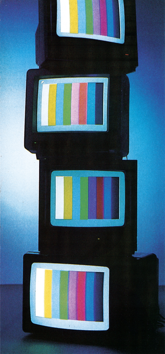
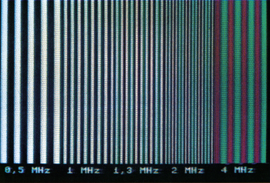
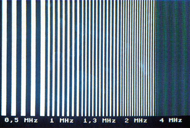
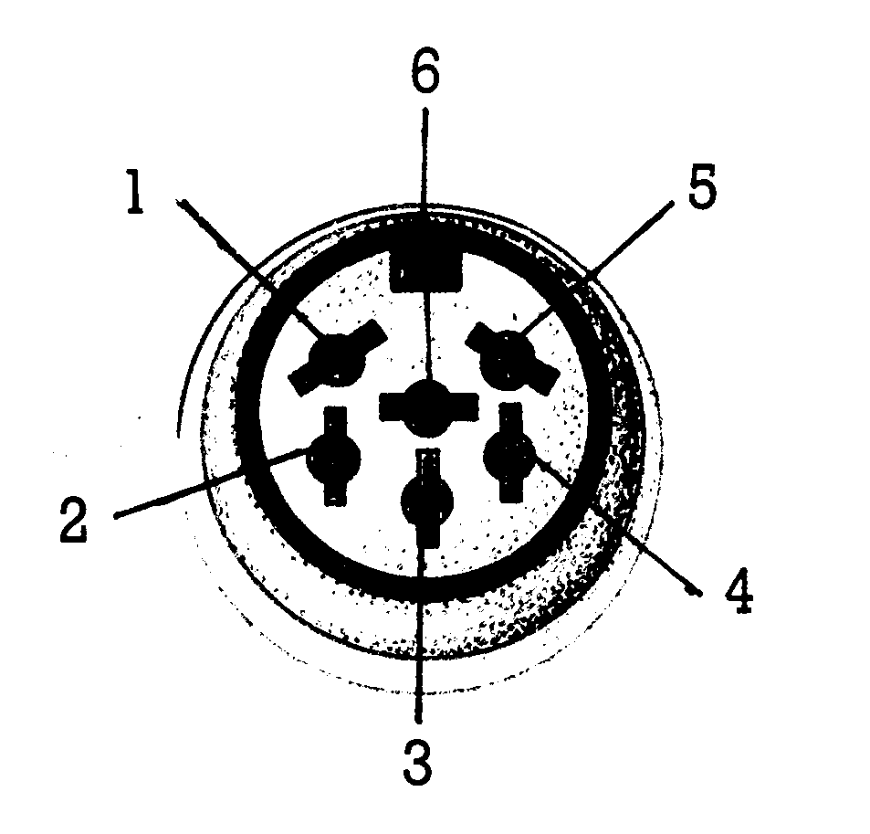
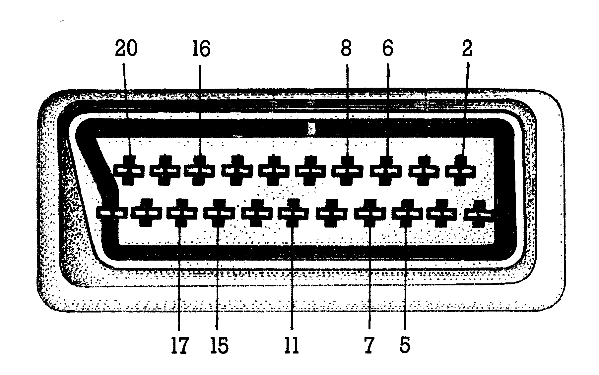
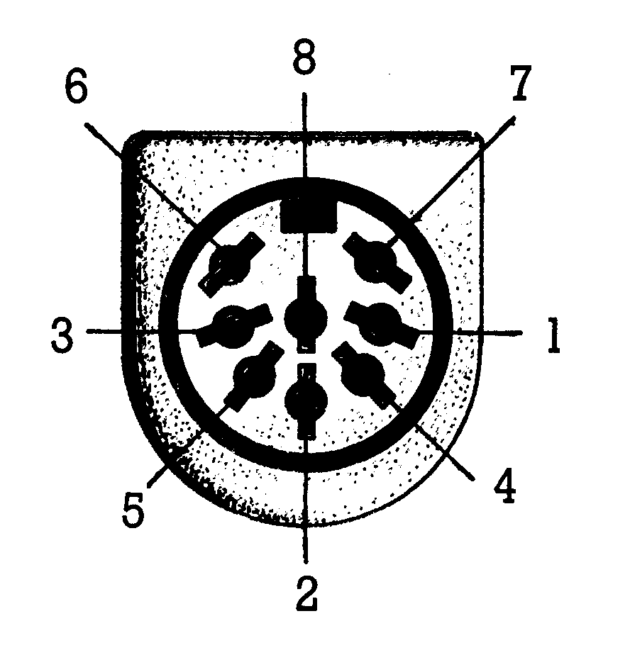
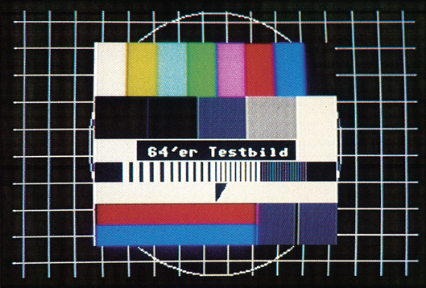

Der Weg zum richtigen Monitor
Genügt ein normaler Fernseher oder braucht man einen richtigen Monitor, um seinem Computer all das zu entlocken, was er optisch zu bieten hat? Hier sagen wir Ihnen, was Sie bei Ihrer Entscheidung beim Kauf eines Monitors berücksichtigen müssen.

Wer hat das, zumindest am Anfang seiner Beschäftigung mit dem Computer, nicht erlebt? Man hat für seinen C 64 oder C 128 tief in die Tasche gegriffen, gleich auch noch eine Diskettenstation und gar einen Drucker gekauft. Da in so gut wie jedem Haushalt ein Fernseher steht, glaubte man, sich wenigstens diese Investition sparen zu können — und schon tauchen die ersten Probleme auf.
Der für den Betrieb am Computer vorgesehene Fernseher liefert ein recht verschwommenes Bild. Man kann bei Spielen kaum die eigene Spielfigur von gegnerischen Sprites unterscheiden — von Textverarbeitung ganz zu schweigen. Oder das eigene Bedürfnis, seinem Hobby am Computer nachzugehen, kollidiert aufs Heftigste mit dem der Familie, die nächste Folge von Dallas nicht zu verpassen. Es drängt sich also die Entscheidung auf: Ein Monitor muß her — aber welcher?
Zunächst sollten Sie sich darüber im klaren sein, was Sie mit Ihrem Computer machen wollen. Sofern Sie sich zu den Einsteigern zählen: Setzen Sie Ihre Qualitätsansprüche nicht zu tief an — diese wachsen im Lauf der Zeit und der Monitor sollte mithalten können.
Kabelsalat
Mit den Anschlußkabeln vom Computer zum Monitor ist es überhaupt so eine Sache. Die einfachste, aber auf Dauer unbefriedigendste Lösung ist der Anschluß mit dem Antennen-Kabel (Bild 1). Besser ist hier schon die direkte Verbindung über die Video/Audio-Buchse (Bild 2). Hier taucht aber das Problem auf, daß der Monitor oder das Fernsehgerät Ihrer Wahl auch die richtigen Buchsen mit der entsprechenden Pinbelegung haben muß. Hier finden sich zum einen die VCR-Buchse (Bild 3), zum anderen die SCART-Buchse (Bild 4), die mit der Video/Audio-Buchse am C 64 (Bild 5) verbunden werden müssen. Vor dem Kauf des Monitors oder Fernsehgerätes sollten Sie sich auf jeden Fall vergewissern, daß die entsprechenden Kabel auch erhältlich sind, damit der Anschluß nicht mit größerem Lötaufwand verbunden ist.



| 1 | Schaltspannung b. Wiedergabe (+12 V) |
| 2 | Video In |
| 3 | Masse |
| 4 | Audio In |
| 5 | + 12 V |
| 6 | unbelegt |

| 2 | Audio links |
| 5, 17 | Masse |
| 6 | Audio rechts |
| 7 | Blau |
| 8 | Schaltspannung (12 V) |
| 11 | Grün |
| 15 | Rot |
| 16 | Austast-Blanking (1-3 V) |
| 20 | Bei RGB: Synchronisation Sonst FBAS/BAS |

| 1 | Luminanz |
| 2 | Masse |
| 3 | Audio out |
| 4 | Video out |
| 5 | Audio in |
| 6, 7 | unbelegt |
| 8 | Chrominanz |
Sollten Sie einen C 128 Ihr eigen nennen, und wollen Sie im 80-Zeichen-Modus oder mit CP/M arbeiten, so ist die Wahl des Monitors von vornherein sehr eingeschränkt, denn Sie benötigen einen Monitor mit RGB-Buchse und Chrominanz/Luminanz-Eingang. Und diese beiden Eingänge besitzen außer dem Commodore Monitor 1901 für den C 128 nur einige wenige Monitore von anderen Herstellern. Mit diesen können Sie in allen Betriebsarten arbeiten. An der Qualität des Bildes gibt es dann kaum mehr etwas auszusetzen. Näheres hierzu erfahren Sie in der »Marktübersicht Monitore« in dieser Ausgabe.
Eine andere Lösung wäre, zwei Monitore am C 128 zu betreiben. Ein Farbmonitor ist hier für Farbdarstellung im 40-Zeichen-Modus und ein S/W-Gerät an der 9poligen Cannon-Buchse für die 80-Zeichen-Darstellung anzuschließen.
Vom Bildschirmspeicher zur Bildröhre
Bei einem Fernseher, der mit einem normalen Koaxialkabel, wie es dem C 64/128 beiliegt, an der Antennenbuchse angeschlossen wird, ist der Weg des Signals folgender:
Die im Bildschirmspeicher des Computers vorliegenden digitalen Bilddaten werden vom VIC zu einem Videosignal aufbereitet. Dieses wiederum wird in einem Modulator zu einem hochfrequenten Antennensignal umgeformt und so über das Kabel dem Fernseher zugeführt. Dieser erzeugt wieder ein Videosignal, das der Bildröhre zugeführt wird. Dieser aufwendige Prozeß kann natürlich die Qualität des ursprünglichen Signals erheblich beeinträchtigen.
Anders ist es dagegen, wenn der Fernseher über einen Video-Eingang verfügt, der mit einem geeigneten Kabel direkt mit der Audio/Video-Buchse des Computers verbunden werden kann. Dadurch entfällt der hochfrequente Teil des Übertragungsweges, was die Bildqualität positiv beeinflußt. Doch auch hier gibt es noch große Qualitätsunterschiede zwischen den einzelnen Fernsehgeräten, die im folgenden behandelt werden sollen.
Scharfe Sache
Wichtigstes Kriterium bei allen Typen von Datensichtgeräten, vor allem aber bei normalen Fernsehern ist die Qualität, beziehungsweise die Schärfe, mit der die Zeichen auf dem Schirm erscheinen. Hier gibt es gravierende Unterschiede. Das liegt zum einen am Weg, den die Signale vom Computer bis zum Bildschirm beschreiten müssen, zum andern an der Bandbreite des Videoverstärkers im Fernseher selbst.
Diese bewegt sich bei den meisten Fernsehgeräten zwischen 5 und 7 MHz. Um sich die Bedeutung dieser zunächst sehr theoretisch anmutenden Größe zu verdeutlichen wollen wir folgende Rechnung anstellen:
Um ein flimmerfreies Bild zu erzeugen, muß pro Sekunde eine genügend hohe Zahl von Einzelbildern am Schirm erzeugt werden, um das menschliche Auge quasi zu überlisten. Nach unserer Fernsehnorm (CCIR-Norm PAL B/G) ist die Dauer eines Elektronenstrahl-Durchlaufs gleich der Netzfrequenz von 50 Hz. Das heißt: 50mal pro Sekunde bewegt sich der Elektronenstrahl zeilenweise von rechts oben nach links unten. Da jedoch ein sehr hoher technischer Aufwand getrieben werden müßte, um 50 »ganze« Bilder in jeder Sekunde zu schreiben, verfiel man auf den Trick mit dem »Interlace-« oder auch Zeilensprung-Verfahren. Hier werden pro Sekunde 50 »halbe« Bilder geschrieben. Und zwar zuerst die ungeradzahligen und dann die geradzahligen Zeilen.
Ein Halbbild besteht aus 312,5 Zeilen. Ein ganzes Bild mit 625 Zeilen wird also 25mal pro Sekunde erzeugt, was 25 x 625 = 15625 Zeilen pro Sekunde entspricht. Dies ist die Zeilenfrequenz, die für das hohe Pfeifen verantwortlich ist, das man bei manchen Geräten hört.
Sollen jetzt Zeichen, oder der Einfachheit halber, senkrechte Striche auf den Bildschirm gebracht werden, so sind diese natürlich in jeder Zeile enthalten. Bei 100 Strichen erhöht sich die zu übertragende Frequenz um den Faktor 100, womit man bei zirka 1,5 MHz angelangt ist. Dies ist im Vergleich zur oben erwähnten Videobandbreite von 5 bis 7 MHz nicht viel. Vergegenwärtigt man sich aber, daß für eine saubere Darstellung ein rechteckiger Spannungsverlauf notwendig ist, und ein Rechtecksignal sich mathematisch zusammensetzt aus der sinusförmigen Grundfrequenz und den ungeradzahligen Vielfachen derselben, so wird das Problem schon deutlich:
Klare Konturen sind wichtig
Für eine Rechtecksschwingung von 1,5 MHz müssen also zusätzlich übertragen werden: 4,5 MHz, 7,5 MHz, 10,5 MHz etc. Mit einem normalen Fernsehgerät ist man also schnell an der Grenze seiner Leistungsfähigkeit und braucht sich deshalb nicht wundern, wenn es nicht gelingt, 80 Zeichen sauber auf den Bildschirm zu bringen. Dies schaffen wirklich nur speziell für diesen Zweck ausgelegte Monitore wie zum Beispiel der Commodore Monitor 1901 für den C 128.
Wollen Sie sich nicht mit Theorie belasten, sondern einen Monitor oder Fernseher, der für Sie in Frage kommt testen, so sei Ihnen das Programm »Testbild«, das auch in dieser Ausgabe erscheint, empfohlen. Mit dem Menüpunkt »Multiburst« können Sie zum Beispiel die Leistungsfähigkeit der Videostufe prüfen. Sollten Sie am rechten Bildschirmrand, wo die senkrechten Striche sehr eng aneinander liegen, nur noch buntes Flimmern oder Farbstreifen sehen, so ist der Verwendungszweck des Gerätes doch schon sehr eingeschränkt.
Auch das Testbild aus diesem Programm (Bild 6), das dem der Fernsehsender nachempfunden ist, eignet sich gut, um die Qualität eines Monitors zu prüfen. In ihm sind einige Testkriterien wie Farbdarstellung, Gitterraster und Auflösungsvermögen vereinigt. Scheuen Sie sich also nicht, das Programm in ein Fachgeschäft mitzunehmen und mit ihm die Monitore der engeren Wahl zu testen.

Wenn Sie den Computer vorwiegend für Spiele einsetzen, nur ab und zu einen Brief zu schreiben haben, und zudem auf die Farbenpracht, die viele Spiele heute auf den Bildschirm zaubern, nicht verzichten wollen, so ist die Entscheidung relativ einfach. In diesem Fall genügt ein normaler portabler Farbfernseher mit etwa 30 bis 33 cm Bilddiagonale und Videobuchse, um den qualitätsmindernden Weg über das Antennenkabel zu vermeiden.
Die Entscheidung
Zu groß sollte das Bild nicht sein, da auch dies die Augen bei längeren Sitzungen am Bildschirm sehr anstrengt.
Hat man als vorgesehene Anwendungen hauptsächlich Textverarbeitung und ähnliches ins Auge gefaßt, so kann man getrost auf Farbdarstellung verzichten, und sollte sich für einen monochromen Monitor entscheiden.
Diese sind erstens erheblich billiger als Farbmonitore, — schon für 300 bis 400 Mark findet man durchaus brauchbare Geräte — und bringen auch bei 80-Zeichen-Darstellung eine deutlich schärfere Textwiedergabe als Farbmonitore. Sie sollten bei einem Monitor noch darauf achten, daß ein Audioteil mit Lautsprecher eingebaut ist, da sonst für Sie der SID des Computers stumm bleibt.
Wollen Sie aber die gesamten Fähigkeiten, die ihr Computer Ihnen bietet, sowohl bei der Farbgrafik, als auch bei der gestochen scharfen und ermüdungsfreien Darstellung von Text voll ausnützen, so sind Sie mit dem Kauf eines eigens für Ihren Computer vorgesehenen Farbmonitors am besten beraten.
Beim C 64 wäre das zum Beispiel der 1701 von Commodore, der über die Video/Audio-Buchse angeschlossen wird. Beim C 128 sind Sie mit dem 1901, der über den RGB-Eingang und den Chrominanz/Luminanz-Eingang mit dem Computer verbunden wird, gut beraten.
(sk)